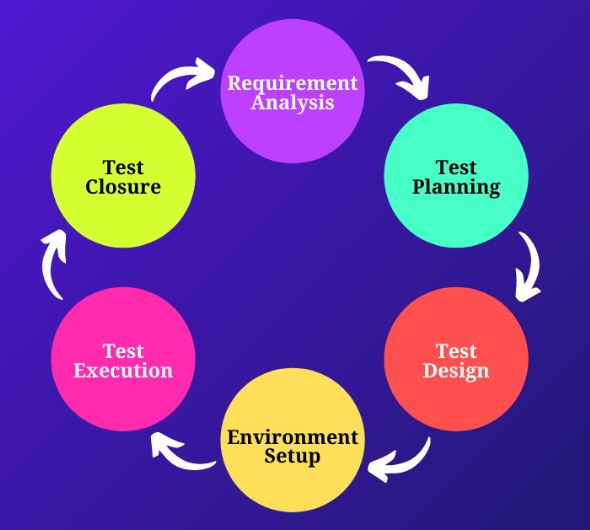

Software Testing Life Cycle

Analisis kebutuhan & risiko
Strategi, resource, & jadwal
Skenario & data uji
Hardware & software
Run test & report bug
Evaluasi & report akhir
STLC memastikan proses pengujian berjalan sistematis, terukur, dan efisien. Setiap tahap memiliki Entry Criteria (syarat mulai) dan Exit Criteria (syarat selesai) yang jelas untuk menjamin kualitas output.